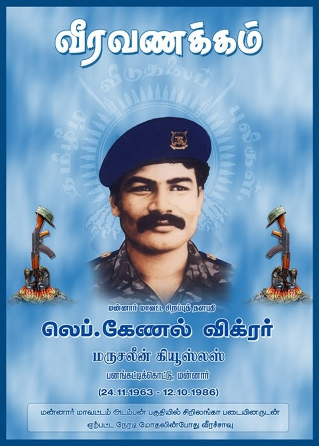

லெப். கேணல் விக்டர் வீர வரலாறு

உண்மைப் பெயர்: மார்செலின் புளொட்டினஸ் பெர்னாண்டோ
இயக்கப் பெயர்: லெப். கேணல் விக்டர்
வீரச்சாவு தேதி: 12.10.1986
வீரச்சாவடைந்த இடம்: அடம்பன், மன்னார்
பிறப்பிடம்: மன்னார்
வரலாற்றுக்குறிப்பு
விடுதலைப் புலிகளின் ஆரம்பகால மூத்த தளபதியும், மன்னார் மாவட்டத்தின் தளபதியுமாக விளங்கியவர் லெப். கேணல் விக்டர். 1986-ல் மன்னார் அடம்பன் பகுதியில் சிறிலங்கா படையினரின் மிகப்பெரிய 'லிபரேஷன்' கூட்டு ராணுவ நடவடிக்கைக்கு எதிராக வியூகம் அமைத்து, படையினரின் கோட்டையை உடைத்து முன்னேறிய போரில் வீரச்சாவடைந்தார்.